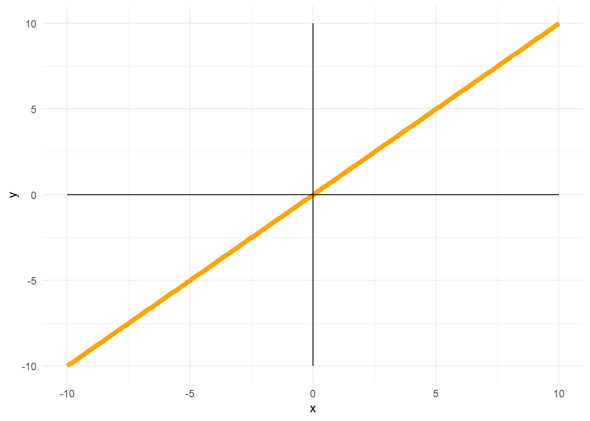
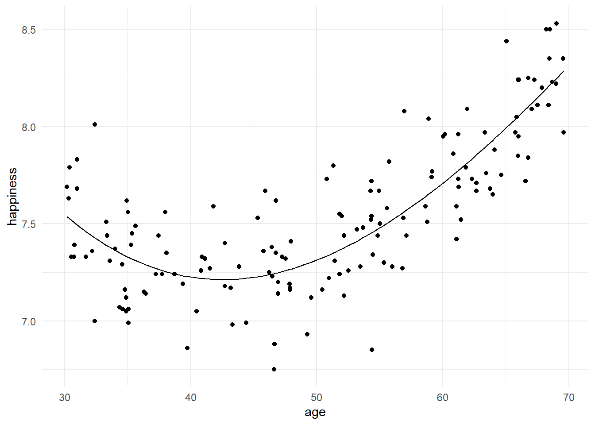
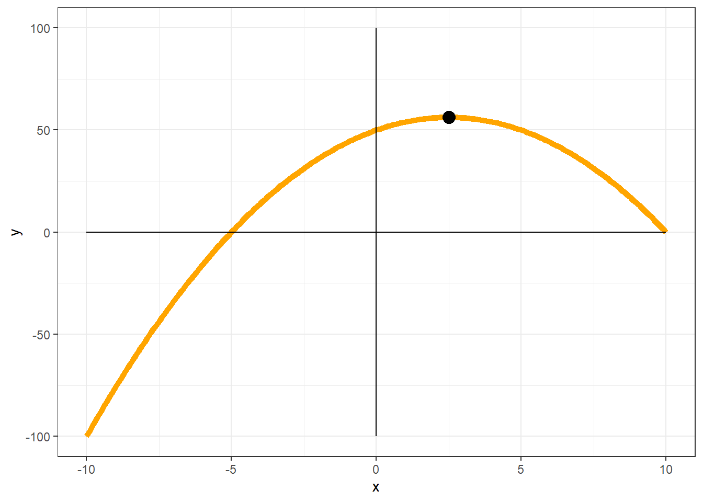
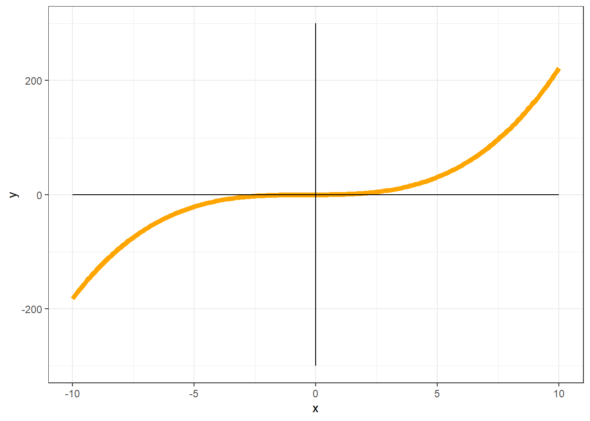
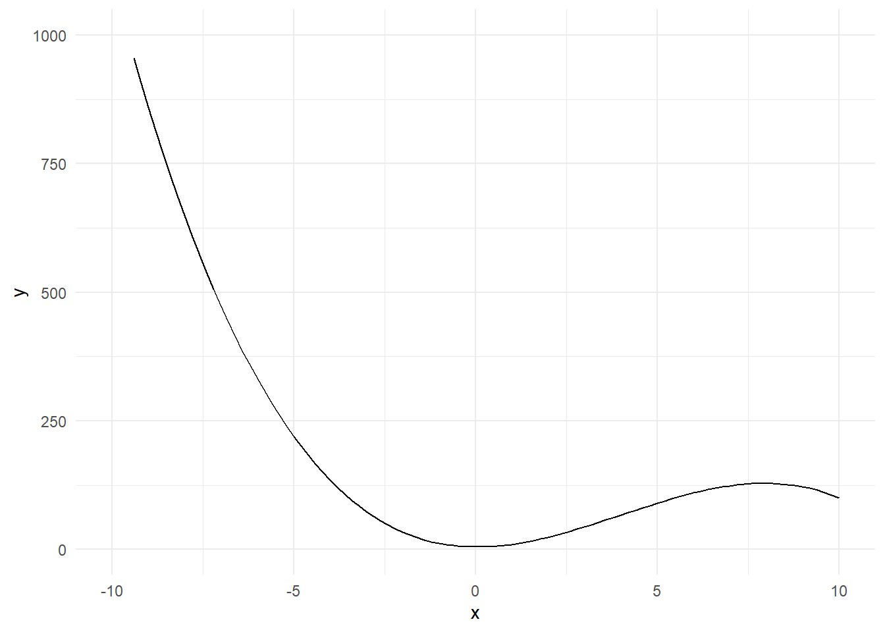
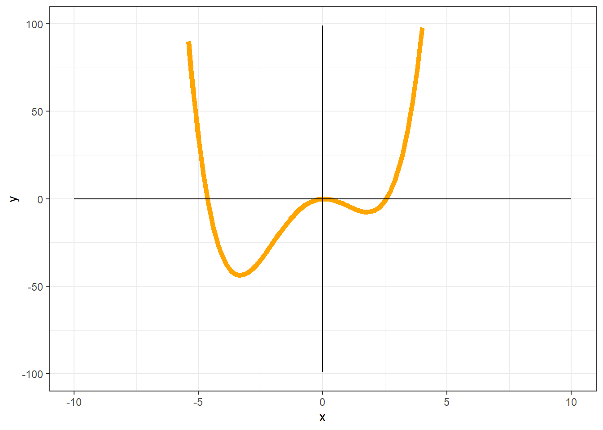
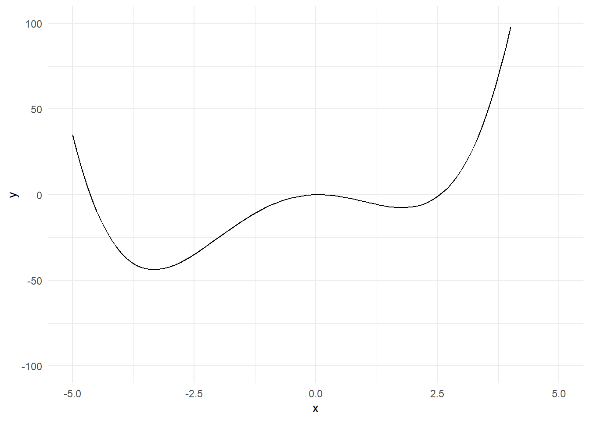

Identifying components
It is worth noting some general characteristics of polynomial equations to give you a better idea of what these various components in the equation look like.
Linear (first-order) components
In a linear equation of the form \(y = b_0 + b_1(x)\), the coefficient \(b_0\) represents the intercept. \(b_1\) is the coefficient for x.
The line for a linear equation keeps on increasing and decreasing for all values of x, with no bends:

Quadratic (second-order) components
Equations with a quadratic component have form \(y = b_0 + b_1(x) + b_2(x^2)\). Again, \(b_0\) represents the intercept. \(b_1\) and \(b_2\) are the coefficients for \(x\) and \(x^2\), respectively.
The maximum/minimum of a curve is the point of inflection at which the curve switches from decreasing to increasing (or increasing to decreasing). Equations with a quadratic component have one minimum (if the \(x^2\) component is positive) or one maximum (if the \(x^2\) component is negative).
For curves with positive \(x^2\) components:

The dot indicates the minimum. Either side of this point, the values of y increase.
For curves with \(-x^2\) components:

The dot indicates the maximum. Either side of this point, the values of y decrease.
Use ggplot() and stat_function() to plot a 2nd degree (quadratic) polynomial with the following characteristics:
- a negative intercept
- a positive linear component
- a negative quadratic component
tibble(x=1:10) %>%
ggplot(aes(x)) +
stat_function(fun=function(x) -5 + 0.5*x - 6.0*x^2) +
xlim(-5,5) +
ylim(-100,100)
> Warning: Removed 21 rows containing missing values (geom_path).
xlim() is used to specify the range of values on the x-axis (-5 to 5).
ylim() is used to specify the range of values on the y-axis (-100 to 100).
The curve specified in the line stat_function(fun=function(x) -5 + 0.5*x - 6.0*x^2) is
\(y = -5 + 0.5x - 6.0x^2\)
Cubic (third) order components
Curves with a cubic component have two minima/maxima (i.e., two points of inflection), and are of the form \(y = b_0 + b_1(x) + b_2(x^2) + b_3(x^3)\), where \(b_0\) is the intercept, and \(b_1\), \(b_2\), and \(b_3\) are the coefficients for the \(x\), \(x^2\), and \(x^3\) components.

Use ggplot() and stat_function() to plot a 3rd degree (cubic) polynomial with the following characteristics:
- a positive intercept
- a negative linear component
- a positive quadratic component
- a negative cubic component
tibble(x=1:10) %>%
ggplot(aes(x)) +
stat_function(fun=function(x) 5 - 0.5*x + 6.0*x^2 - 0.5*x^3) +
xlim(-10,10) +
ylim(0,1000)
> Warning: Removed 3 rows containing missing values (geom_path).
The curve specified in the line stat_function(fun=function(x) 5 - 0.5*x + 6.0*x^2 - 0.5*x^3) is
\(y = 5 - 0.5x + 6.0x^2 - 0.5x^3\)
Quartic (fourth) order components
A curve with a quartic component would have three maxima/minima (i.e., three points of inflection). The equation would be of the form \(y = b_0 + b_1(x) + b_2(x^2) + b_3(x^3) + b_4(x^4)\).
Use ggplot and stat_function to plot a 4th degree polynomial.
Note: The points of inflection may not always be visible if the scale on either the y- or x-axis is very large. You can use ylim() and xlim() to adjust the scale of the axes, e.g., for the quartic function above:
tibble(x=1:10) %>%
ggplot(aes(x)) +
stat_function(fun=function(x) 0 + 0.5*x - 6.0*x^2 + 1.0*x^3 + 0.5*x^4) +
xlim(-5,5) +
ylim(-100,100)
> Warning: Removed 10 rows containing missing values (geom_path).
The code specified in stat_function(fun=function(x) 0 + 0.5*x - 6.0*x^2 + 1.0*x^3 + 0.5*x^4) is
\(y = 0 + 0.5x - 6.0x^2 + 1.0x^3 + 0.5x^4)\)